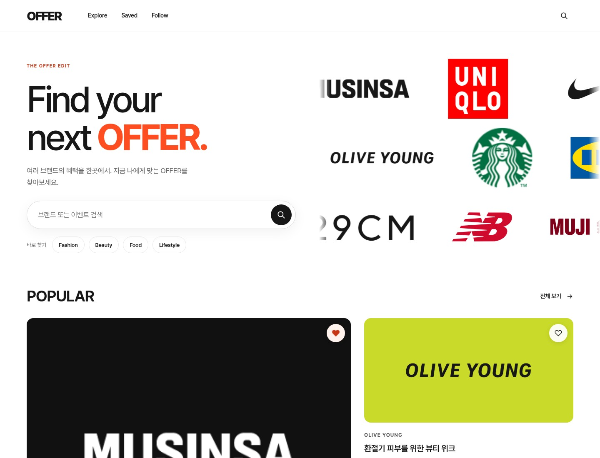
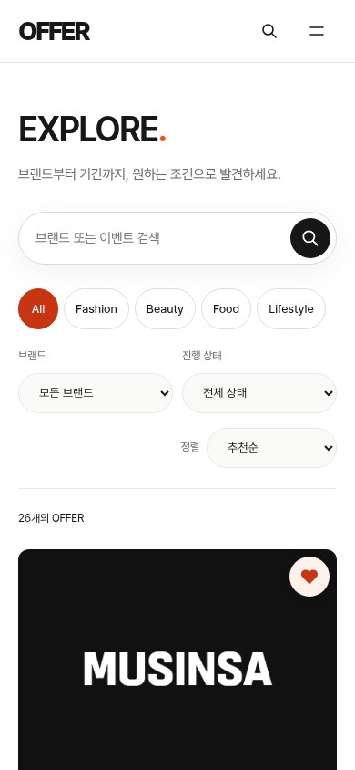
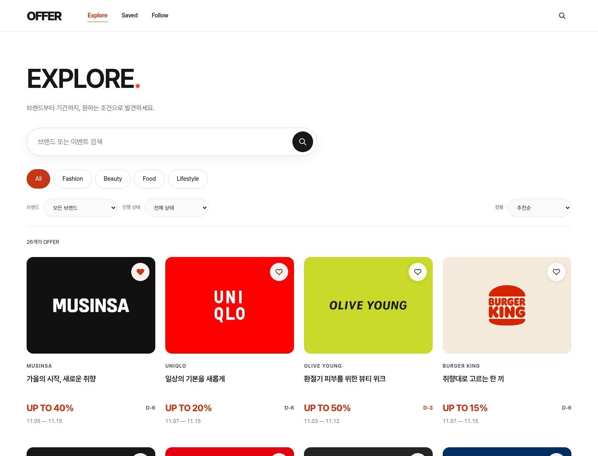
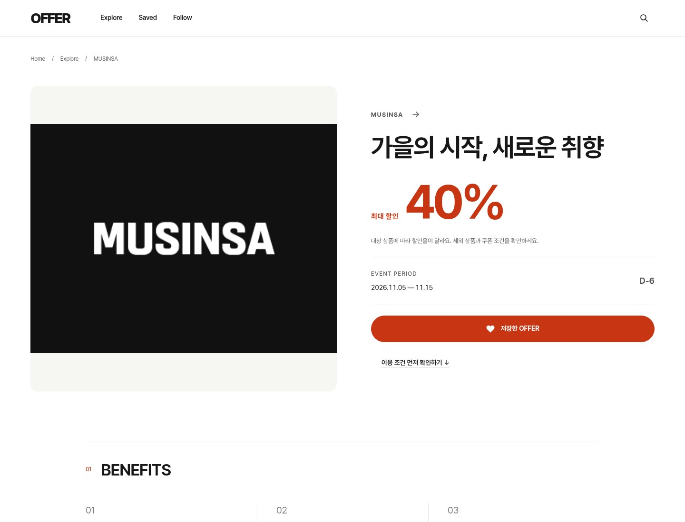
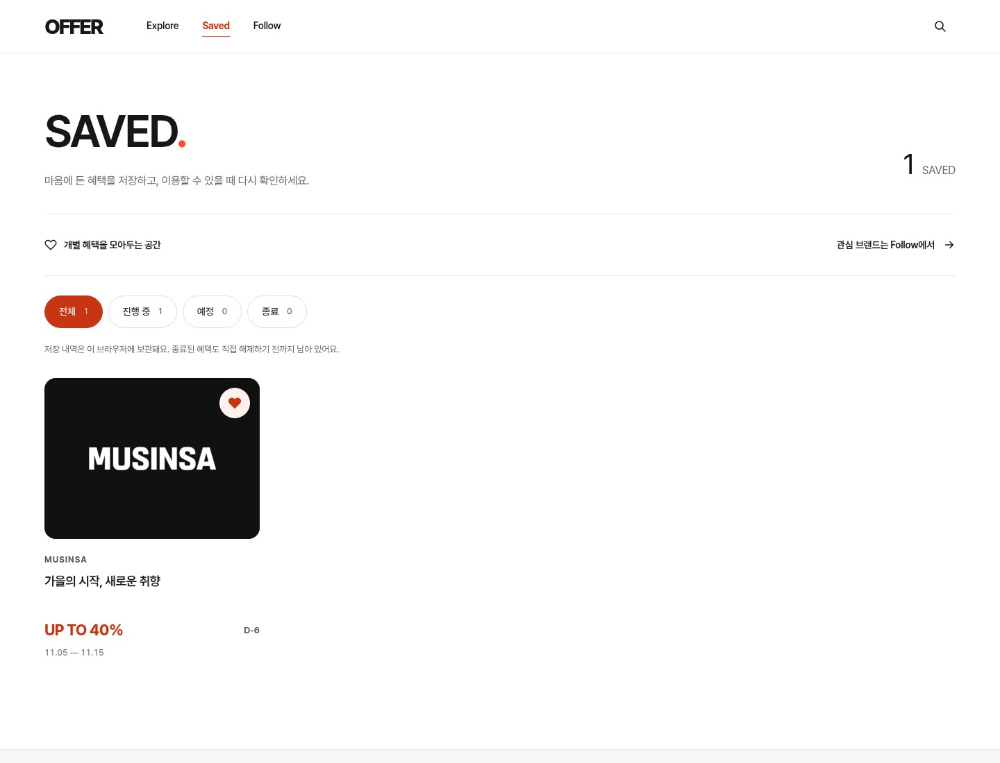
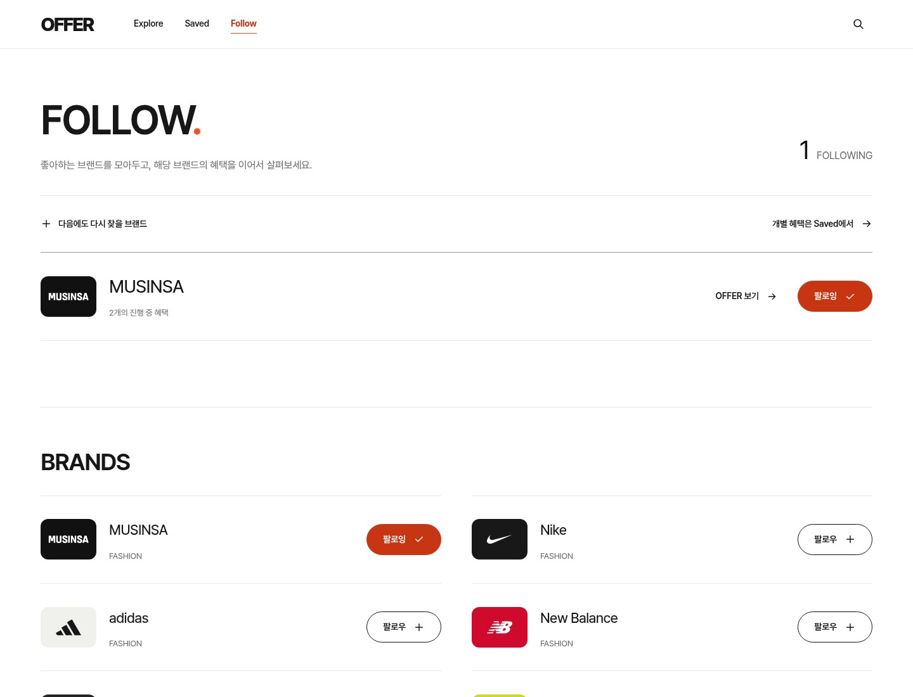
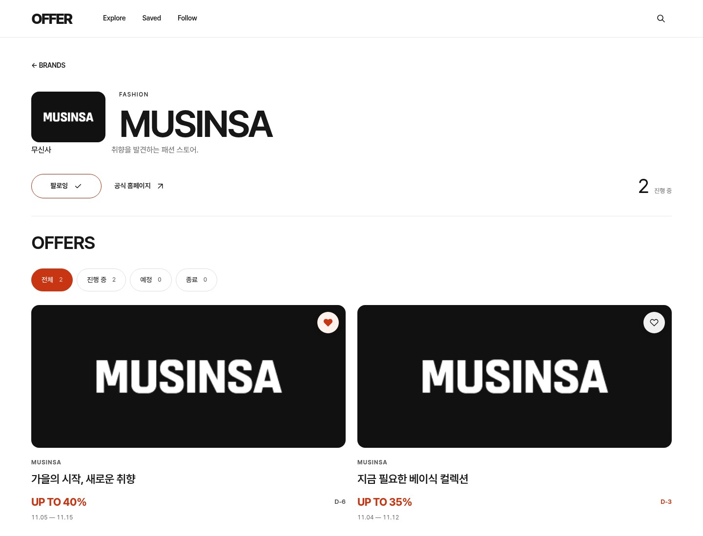
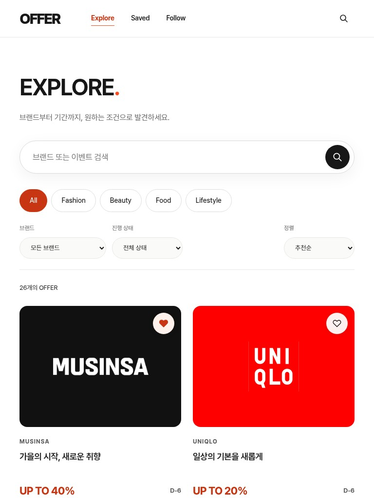

어디서 혜택을 발견하는가?
공식 홈페이지 · SNS · 쇼핑 플랫폼
검증할 질문

흩어진 브랜드 혜택을 한곳에서
빠르게 발견하고 비교하다
01 / OVERVIEW
OFFER는 브랜드 프로모션을 한곳에서 탐색하고 같은 기준으로 비교하도록 기획한 반응형 웹 서비스입니다.
02 / PROBLEM HYPOTHESIS
브랜드 공식 채널, SNS, 쇼핑 플랫폼에 흩어진 정보. 할인 조건과 진행 기간을 다시 해석해야 할 수 있다는 문제 가설에서 출발했습니다.
분산된 채널 → 서로 다른 표기 → 조건 재확인 → 비교 부담
03 / RESEARCH PLAN
사용자 조사 결과가 아닌, 서비스의 문제 가설을 확인하기 위한 탐색적 조사 계획입니다.
RESEARCH PENDING · 목표 20–30명 · 응답 수집 전
공식 홈페이지 · SNS · 쇼핑 플랫폼
검증할 질문할인율 · 최종 가격 · 기간 · 조건
검증할 질문정보 분산 · 표기 차이 · 만료 정보
검증할 질문04 / UX STRATEGY
한곳에 모으는 데서 끝내지 않고, 다양한 브랜드의 행사를 같은 항목과 순서로 읽을 수 있도록 설계했습니다.
05 / INFORMATION ARCHITECTURE
발견 → 조건 적용 → 비교 → 상세 확인 → 저장 또는 이용. 각 화면은 이 흐름 안에서 역할을 갖습니다.
관심 행사 발견
조건으로 좁히기
카드로 1차 비교
기간·조건 확인
저장 · 공식 사이트
06 / KEY UX / DISCOVER
검색할 대상이 정해진 사용자와 먼저 둘러보려는 사용자의 시작점을 함께 제공합니다.
07 / KEY UX / COMPARE
검색·필터·정렬과 카드의 정보 위계를 하나의 탐색 경험으로 연결했습니다.

실제 실행본의 전체 혜택 화면입니다. 위 버튼으로 조건을 적용한 캡처와 비교할 수 있습니다.
08 / KEY UX / DECIDE
어떤 행사인지, 언제까지 적용되는지, 이용하려면 어디로 이동해야 하는지를 구분합니다.

캡처의 프로모션은 데모용 가상 데이터입니다. 실제 행사·제휴·할인 보장이 아닙니다.
09 / SAVED & FAVORITES
개별 행사와 브랜드에 대한 관심을 같은 저장 행동으로 섞지 않았습니다.
SAVED / 행사 단위

저장한 혜택의 기간과 상태를 다시 확인합니다.
FAVORITES / 브랜드 단위

관심 브랜드를 모아 해당 브랜드의 혜택을 다시 탐색합니다.
10 / BRAND DETAIL
브랜드를 선택한 다음에도 맥락이 끊기지 않도록 브랜드 정보와 관련 행사를 연결했습니다.

11 / RESPONSIVE WEB
카드의 읽는 순서는 유지하고, 화면 폭에 따라 콘텐츠 밀도와 탐색 요소의 배치를 조정했습니다.

12 / DESIGN SYSTEM
뉴트럴 컬러, 최소한의 오렌지 강조, 명확한 타이포그래피로 서로 다른 브랜드를 같은 구조 안에서 읽도록 합니다.
#FFFFFF
#171717
#F1F1ED
#E9E8E3
#FF4D22
브랜드 · 혜택 · 기간 · 상태
13 / FINAL PROTOTYPE
HTML · CSS · JavaScript로 구현한 반응형 데모입니다. 검색·조건 적용·저장·브랜드 팔로우를 실제 실행 사이트에서 확인할 수 있습니다.
이번 상세페이지의 캡처는 현재 저장된 실행본에서 새로 촬영했습니다. 가상 혜택과 브라우저에 저장한 샘플 상태를 사용했습니다.
14 / REFLECTION
더 많은 정보를 보여주기보다, 비교하고 선택하는 과정을 단순하게.